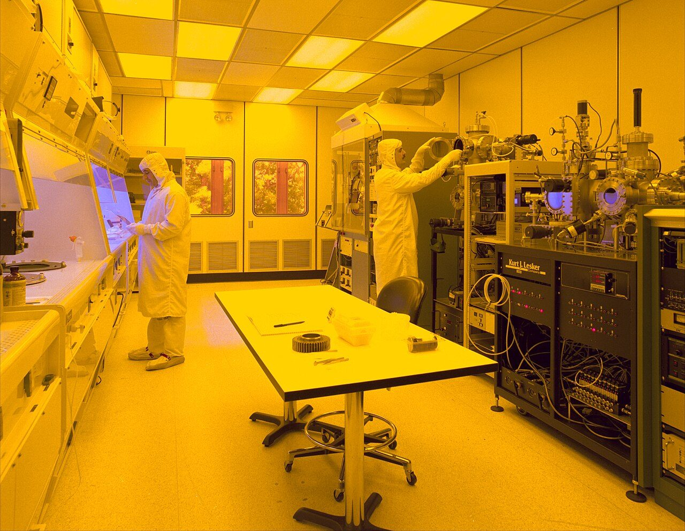
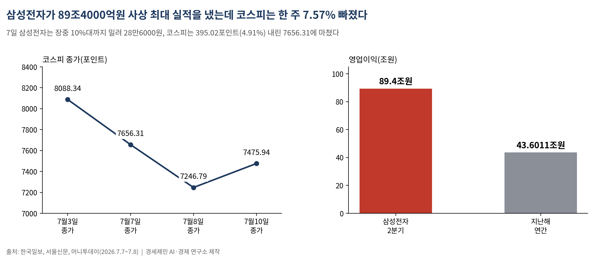
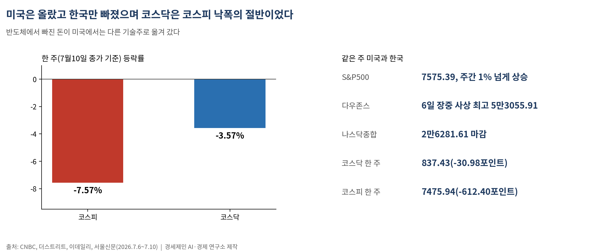
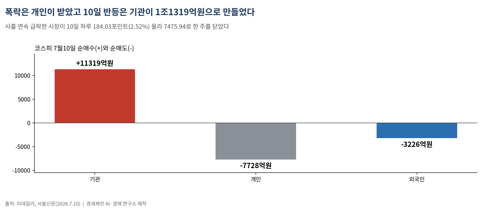
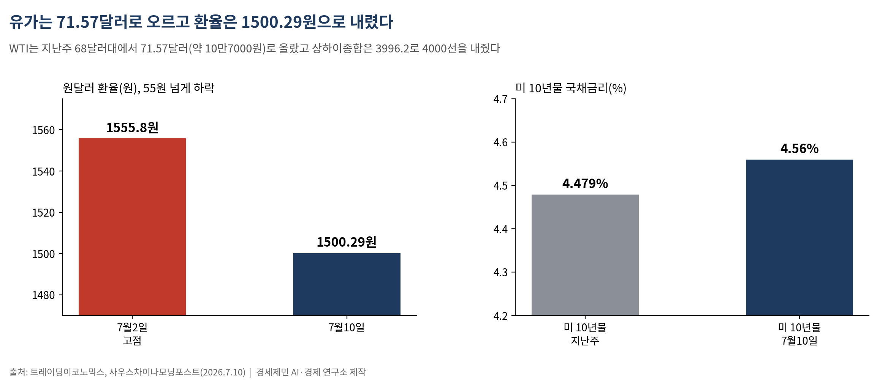

[주식공부] 89조 사상 최대 실적에도 코스피 한 주 7.57% 폭락…셀온이 삼킨 반도체
삼성전자 2분기 영업이익 89조4000억으로 엔비디아도 넘었지만 이틀간 -10%, 코스피는 8088.34에서 7475.94로 밀렸다…미국은 오르고 한국만 빠졌다

(데이터 기준시점: 2026년 7월 10일 종가)
지난주 코스피는 612.40포인트(7.57%) 내린 7475.94에 마감했다. 두 주 연속 하락이다. 삼성전자가 7일 2분기 영업이익 89조4000억원이라는 사상 최대 실적을 내놓았는데도, 시장은 그 주에 더 크게 빠졌다.
실적이 나온 날 주가가 오르지 않았다. 오히려 떨어졌다. 좋은 숫자가 나온 자리에서 파는 '셀온(sell on the news·재료 소멸 매도)'이 한 주를 지배했다.
1. 실적이 아니라 이야기가 시장을 지배했다

삼성전자 2분기 영업이익 89조4000억원은 지난해 1년치 영업이익 43조6011억원의 두 배가 넘는다(한국일보, 7월7일). 엔비디아의 최근 분기 영업이익 535억달러(약 81조8000억원)도 웃돌았다. 숫자만 보면 세계 최고였다.
그런데 발표 당일인 7일 삼성전자는 장중 10%대까지 밀려 28만6000원까지 떨어졌고, 코스피는 395.02포인트(4.91%) 내린 7656.31에 마쳤다(서울신문, 7월7일). 이튿날 8일에는 409.52포인트(5.35%) 더 빠진 7246.79로 저점을 팠다(머니투데이, 7월8일).
'셀온'은 좋은 재료가 공개되는 순간 파는 현상이다. 기대가 이미 주가에 반영돼 있으면, 재료가 확인되는 날 '더 살 이유'가 사라진다. "소문에 사서 뉴스에 팔라"는 증시 격언 그대로다. 89조라는 실적보다, 모건스탠리 최고투자책임자가 "반도체 상승장이 마무리 단계"라고 진단한 이야기가 더 무거웠다(머니투데이, 7월8일). 실적은 확인됐고, 주가는 이야기를 따라갔다.
2. 미국은 오르고 한국만 빠졌다

이 폭락은 세계 증시의 동반 급락이 아니었다. 같은 주 미국은 올랐다. 스탠더드앤드푸어스(S&P)500지수는 7575.39로 주간 1% 넘게 올랐고, 다우존스산업평균지수는 6일 장중 5만3000선을 넘어 사상 최고(5만3055.91)를 새로 썼다(CNBC·더스트리트, 7월6일). 나스닥종합지수도 2만6281.61로 마쳤다.
반도체에서 빠진 돈이 미국에선 다른 기술주로 옮겨 갔을 뿐이다. 한국은 달랐다. 시가총액 1·2위가 모두 반도체인 코스피는 '반도체 고점론' 한 방에 지수 전체가 흔들렸다. 코스닥은 그나마 덜 빠졌다. 한 주 30.98포인트(3.57%) 내린 837.43으로, 코스피 낙폭의 절반이었다. 반도체 쏠림이 적은 시장이 덜 흔들린 셈이다.
3. 폭락은 개인이 받고, 반등은 기관이 만들었다

사흘 연속 급락한 시장은 10일 하루 184.03포인트(2.52%) 올라 7475.94로 한 주를 닫았다. 반등을 만든 손은 기관이었다. 이날 기관이 1조1319억원을 순매수해 지수를 끌어올렸고, 개인은 7728억원, 외국인은 3226억원을 팔았다(이데일리·서울신문, 7월10일).
손이 바뀌었다. 폭락하는 날 저가에 받아 든 개인은 반등하는 날 차익을 챙겨 팔았고, 외국인은 내리든 오르든 팔았다. 89조라는 사상 최대 실적을 만든 것은 삼성전자의 공장과 엔지니어였다. 그 실적이 확인된 주에 주가는 빠졌고, 빚내어 지수 등락의 두 배를 좇는 레버리지 상품을 든 개인은 다시 손실을 안았다. 버는 것과 나누는 것은 다른 문제다.
4. 유가는 오르고 환율은 내렸다 — 거시 다섯 잣대

물가는 미국이 관건으로 넘어갔다. 미 연방준비제도(Fed)는 6월 기준금리를 연 3.50~3.75%로 동결한 상태고, 미 10년물 국채금리는 10일 4.56%로 지난주(4.479%)보다 올랐다(트레이딩이코노믹스). 서부텍사스산 원유(WTI)는 배럴당 71.57달러(약 10만7000원)로 지난주 68달러대에서 다시 올랐다. 미국과 이란의 긴장이 기름값을 밀어 올렸다.
반대로 원달러 환율은 10일 1500.29원으로, 7월2일 1555.80원 고점에서 55원 넘게 내렸다. 지수가 7.57% 빠지는 동안 원화는 오히려 강세로 돌아섰다. 지수의 급락과 환율의 안정은 같은 주의 숫자다. 중국 상하이종합은 4000선을 내준 3996.2로, 항셍지수는 기술주 재매도로 1년여 만에 최악의 주간을 보냈다(사우스차이나모닝포스트).
5. 다음 주, 14일 미국 물가가 분수령이다
다음 주 달력의 핵심은 14일(현지시간) 나올 미국 6월 소비자물가(CPI)다. 이 숫자가 7월28~29일 연준 회의(FOMC)의 금리 결정을 좌우한다. 이어 25일 미 6월 개인소비지출(PCE) 물가, 29일 SK하이닉스 2분기 실적, 30일 삼성전자 확정실적 설명회가 줄줄이 대기한다. 특히 30일 설명회에서 밝힐 3분기 D램·낸드 가격 인상률이 '반도체 고점론'을 검증할 관문이다.
기본 시나리오는 7400~7600선의 매물 소화다. 셀온으로 튀어나온 물량을 시장이 받아내는 국면이다. 14일 물가가 둔화로 확인되고 반도체 심리가 돌아서면 낙폭 만회가 빨라지고(상향), 물가가 다시 튀거나 고점론이 재점화하면 7200선을 다시 시험한다(하향). 사상 최대 실적에 안도하는 일과, 그 실적이 나온 주에 외국인이 팔고 나갔다는 수급표를 읽는 일은 다른 자리에서 시작한다.
─────────────────────
※ 이 기사는 인공지능 프로그램 클로드 오푸스 4.8(Claude Opus 4.8)을 활용해 작성했다.
참고문헌
· "삼성전자 2분기 영업이익 89.4조 원… 엔비디아도 넘었다", 한국일보, 2026.7.7., https://www.hankookilbo.com/news/article/A2026070707400004305
· "'사상 최대 실적'인데 7% 급락한 삼성전자…코스피 7600선 '털썩'", 서울신문, 2026.7.7., https://www.seoul.co.kr/news/economy/securities/2026/07/07/20260707500213
· "반도체 고점론에 전쟁까지 '와르르'…7300 탈환, '반등' 불씨 살린다", 머니투데이, 2026.7.8., https://www.mt.co.kr/amp/stock/2026/07/08/2026070816312580263
· "코스피, 2.52% 오른 7475.94…코스닥, 5.47% 오른 837.43p[마감]", 이데일리, 2026.7.10., https://edaily.co.kr/News/Read?mediaCodeNo=257&newsId=04188566645513208
· "[마감시황] 코스피, 기관 순매수에 2.52% 올라 7475.94 마감", 서울신문, 2026.7.10., https://www.seoul.co.kr/news/economy/securities/2026/07/10/20260710500192
· "S&P 500 closes higher to notch a winning week, helped by tech gains", CNBC, 2026.7.9., https://www.cnbc.com/2026/07/09/stock-market-today-live-updates.html
· "Stock Market Today (July 6, 2026): Dow surpasses 53K; sets new closing record", TheStreet, 2026.7.6., https://www.thestreet.com/stock-market-today/stock-market-today-dow-jones-sp-500-nasdaq-updates-july-6-2026
· "Hang Seng Index closes out worst week in over a year in renewed tech sell-off", South China Morning Post, 2026.7.10., https://www.scmp.com/business/china-business/article/3358428
· "Treasury Yields Snapshot: July 10, 2026", Advisor Perspectives, 2026.7.10., https://www.advisorperspectives.com/dshort/updates/2026/07/10/treasury-yields-snapshot-july-10-2026
· "US CPI June 2026 release schedule / Fed Meeting Tracker 2026", BLS·Forbes, 2026.7., https://www.bls.gov/schedule/news_release/cpi.htm
사진 출처
· [대표사진] Uploaded by Duk 08:45, 16 Feb 2005 (UTC), "Clean room.jpg", 위키미디어 공용, 퍼블릭 도메인, https://commons.wikimedia.org/wiki/File:Clean_room.jpg
※ 이 기사는 인공지능을 활용해 작성했습니다.
관련기사
- [주식공부] 코스피 한 주 8.77% 폭락…폭락하는 날 한국은행은 금리를 올렸다
- [주식공부] 메타 한마디에 코스피 7.89% 폭락, 하루 만에 5.76% 반등…7일 삼성전자 실적이 가른다
- [주식공부] 코스피 하루 만에 4.46% 빠지고 3.56% 반등…이틀 사이 사이드카가 방향을 뒤집었다
- [주식공부] 이틀 만에 천국과 지옥…마이크론에 5.42% 오른 코스피, 애플에 5.81% 빠졌다
저작권자 © AI경세제민 무단전재 및 재배포, AI학습 및 활용 금지